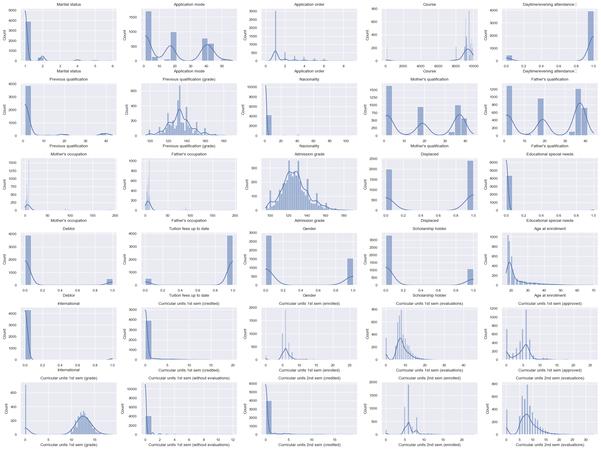
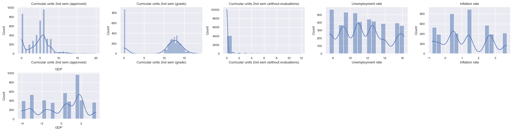
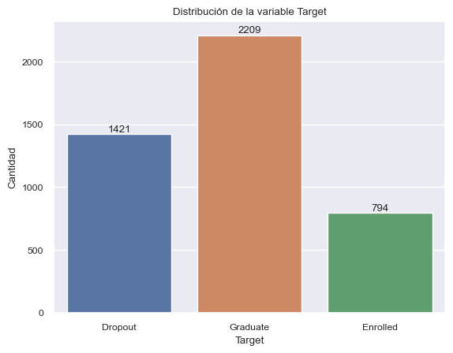
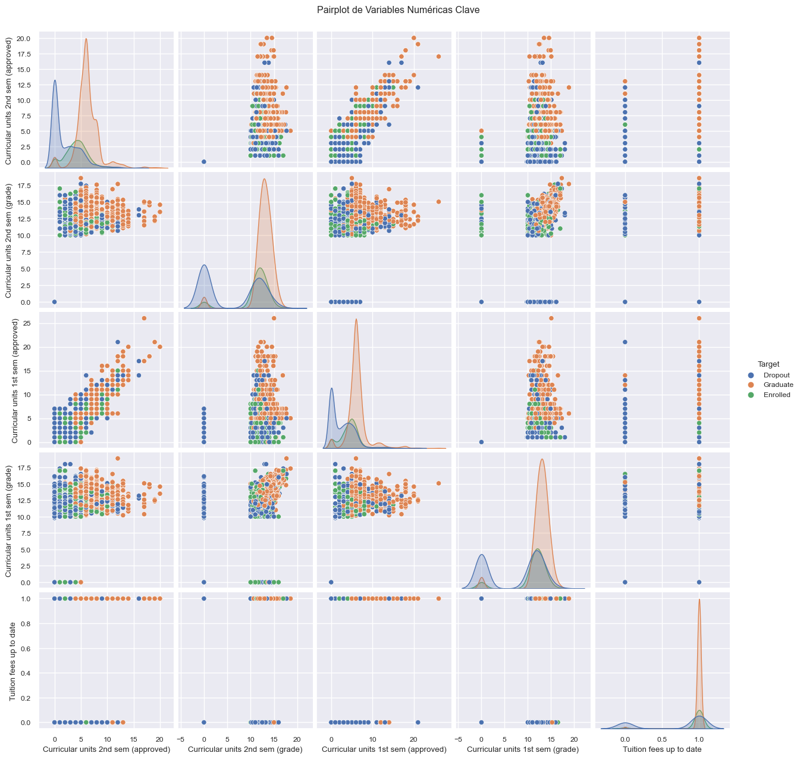
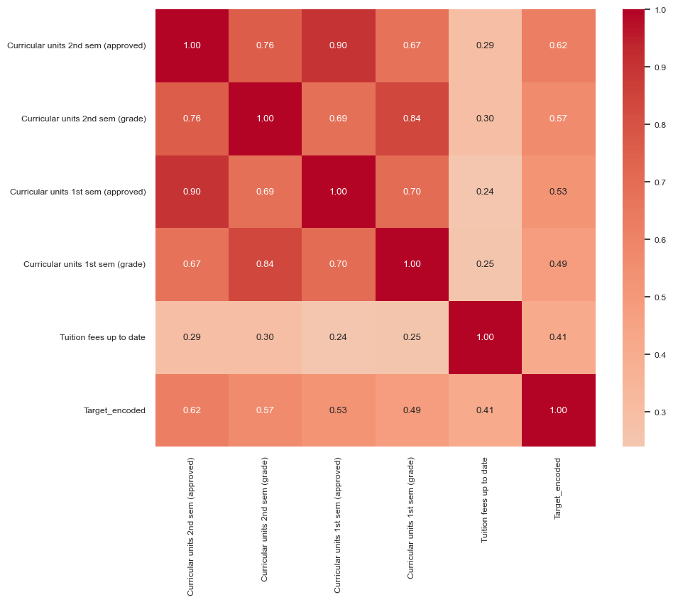
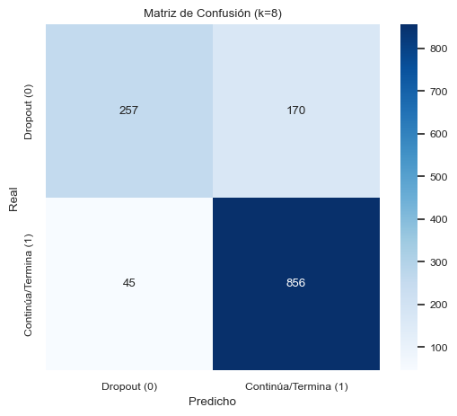
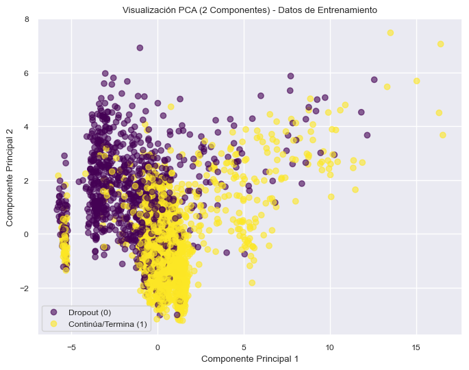
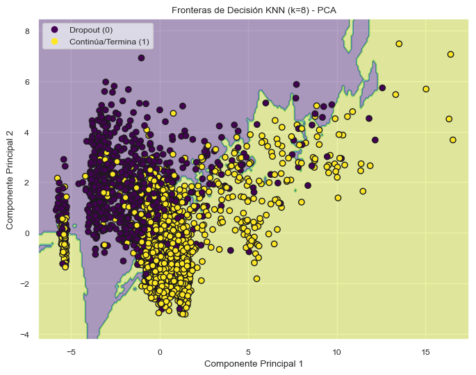
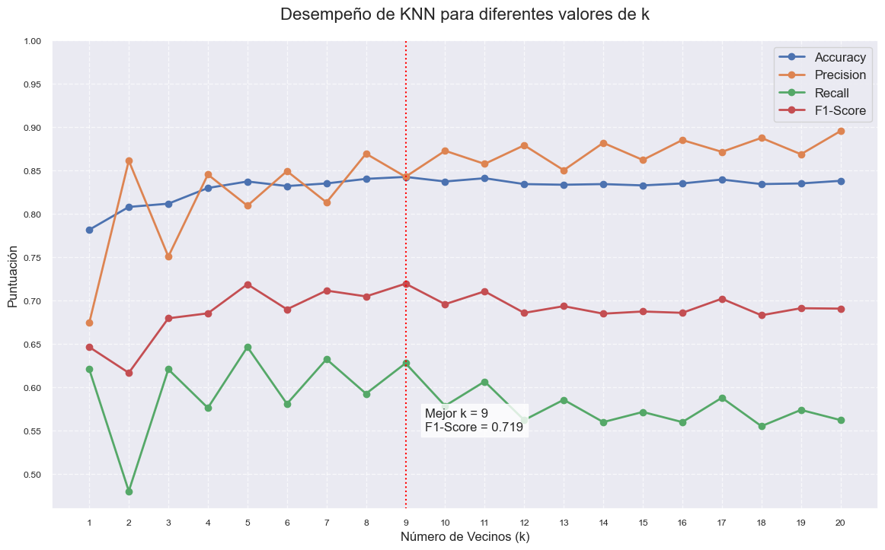
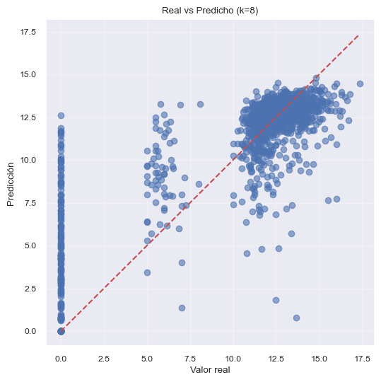

Análisis de Proyecto Integrador de Aprendizaje Automatizado#
Como objetivo de estudio tenemos presente identificar resultados y los que estos significan de aquellos estudiantes con mayor riesgo de abandonar sus estudios académicos y ayudar a encontrar estrategias preventivas que favorezcan su permanencia pues recopila información académica, socioeconómica y de hábitos de estudio para la toma de decisiones orientadas a mejorar la retención de información de estos estudiantes.
Para ello iniciamos con nuestro análisis de la base
import pandas as pd
import numpy as np
import matplotlib.pyplot as plt
import seaborn as sns
from sklearn.preprocessing import StandardScaler, OneHotEncoder
from sklearn.ensemble import RandomForestRegressor
from sklearn.compose import ColumnTransformer
from sklearn.model_selection import train_test_split, cross_val_score
from sklearn.neighbors import KNeighborsRegressor, KNeighborsClassifier
from sklearn.metrics import classification_report, confusion_matrix, accuracy_score
from sklearn.decomposition import PCA
from sklearn.pipeline import Pipeline
from sklearn.metrics import precision_score, recall_score, f1_score
import warnings
warnings.filterwarnings("ignore", category=UserWarning)
warnings.filterwarnings("ignore", category=FutureWarning)
dataset = pd.read_csv('data.csv', sep=';')
print("Dimensiones:", dataset.shape)
Dimensiones: (4424, 37)
dataset.head()
| Marital status | Application mode | Application order | Course | Daytime/evening attendance\t | Previous qualification | Previous qualification (grade) | Nacionality | Mother's qualification | Father's qualification | ... | Curricular units 2nd sem (credited) | Curricular units 2nd sem (enrolled) | Curricular units 2nd sem (evaluations) | Curricular units 2nd sem (approved) | Curricular units 2nd sem (grade) | Curricular units 2nd sem (without evaluations) | Unemployment rate | Inflation rate | GDP | Target | |
|---|---|---|---|---|---|---|---|---|---|---|---|---|---|---|---|---|---|---|---|---|---|
| 0 | 1 | 17 | 5 | 171 | 1 | 1 | 122.0 | 1 | 19 | 12 | ... | 0 | 0 | 0 | 0 | 0.000000 | 0 | 10.8 | 1.4 | 1.74 | Dropout |
| 1 | 1 | 15 | 1 | 9254 | 1 | 1 | 160.0 | 1 | 1 | 3 | ... | 0 | 6 | 6 | 6 | 13.666667 | 0 | 13.9 | -0.3 | 0.79 | Graduate |
| 2 | 1 | 1 | 5 | 9070 | 1 | 1 | 122.0 | 1 | 37 | 37 | ... | 0 | 6 | 0 | 0 | 0.000000 | 0 | 10.8 | 1.4 | 1.74 | Dropout |
| 3 | 1 | 17 | 2 | 9773 | 1 | 1 | 122.0 | 1 | 38 | 37 | ... | 0 | 6 | 10 | 5 | 12.400000 | 0 | 9.4 | -0.8 | -3.12 | Graduate |
| 4 | 2 | 39 | 1 | 8014 | 0 | 1 | 100.0 | 1 | 37 | 38 | ... | 0 | 6 | 6 | 6 | 13.000000 | 0 | 13.9 | -0.3 | 0.79 | Graduate |
5 rows × 37 columns
dataset.info()
<class 'pandas.core.frame.DataFrame'>
RangeIndex: 4424 entries, 0 to 4423
Data columns (total 37 columns):
# Column Non-Null Count Dtype
--- ------ -------------- -----
0 Marital status 4424 non-null int64
1 Application mode 4424 non-null int64
2 Application order 4424 non-null int64
3 Course 4424 non-null int64
4 Daytime/evening attendance 4424 non-null int64
5 Previous qualification 4424 non-null int64
6 Previous qualification (grade) 4424 non-null float64
7 Nacionality 4424 non-null int64
8 Mother's qualification 4424 non-null int64
9 Father's qualification 4424 non-null int64
10 Mother's occupation 4424 non-null int64
11 Father's occupation 4424 non-null int64
12 Admission grade 4424 non-null float64
13 Displaced 4424 non-null int64
14 Educational special needs 4424 non-null int64
15 Debtor 4424 non-null int64
16 Tuition fees up to date 4424 non-null int64
17 Gender 4424 non-null int64
18 Scholarship holder 4424 non-null int64
19 Age at enrollment 4424 non-null int64
20 International 4424 non-null int64
21 Curricular units 1st sem (credited) 4424 non-null int64
22 Curricular units 1st sem (enrolled) 4424 non-null int64
23 Curricular units 1st sem (evaluations) 4424 non-null int64
24 Curricular units 1st sem (approved) 4424 non-null int64
25 Curricular units 1st sem (grade) 4424 non-null float64
26 Curricular units 1st sem (without evaluations) 4424 non-null int64
27 Curricular units 2nd sem (credited) 4424 non-null int64
28 Curricular units 2nd sem (enrolled) 4424 non-null int64
29 Curricular units 2nd sem (evaluations) 4424 non-null int64
30 Curricular units 2nd sem (approved) 4424 non-null int64
31 Curricular units 2nd sem (grade) 4424 non-null float64
32 Curricular units 2nd sem (without evaluations) 4424 non-null int64
33 Unemployment rate 4424 non-null float64
34 Inflation rate 4424 non-null float64
35 GDP 4424 non-null float64
36 Target 4424 non-null object
dtypes: float64(7), int64(29), object(1)
memory usage: 1.2+ MB
dataset.describe()
| Marital status | Application mode | Application order | Course | Daytime/evening attendance\t | Previous qualification | Previous qualification (grade) | Nacionality | Mother's qualification | Father's qualification | ... | Curricular units 1st sem (without evaluations) | Curricular units 2nd sem (credited) | Curricular units 2nd sem (enrolled) | Curricular units 2nd sem (evaluations) | Curricular units 2nd sem (approved) | Curricular units 2nd sem (grade) | Curricular units 2nd sem (without evaluations) | Unemployment rate | Inflation rate | GDP | |
|---|---|---|---|---|---|---|---|---|---|---|---|---|---|---|---|---|---|---|---|---|---|
| count | 4424.000000 | 4424.000000 | 4424.000000 | 4424.000000 | 4424.000000 | 4424.000000 | 4424.000000 | 4424.000000 | 4424.000000 | 4424.000000 | ... | 4424.000000 | 4424.000000 | 4424.000000 | 4424.000000 | 4424.000000 | 4424.000000 | 4424.000000 | 4424.000000 | 4424.000000 | 4424.000000 |
| mean | 1.178571 | 18.669078 | 1.727848 | 8856.642631 | 0.890823 | 4.577758 | 132.613314 | 1.873192 | 19.561935 | 22.275316 | ... | 0.137658 | 0.541817 | 6.232143 | 8.063291 | 4.435805 | 10.230206 | 0.150316 | 11.566139 | 1.228029 | 0.001969 |
| std | 0.605747 | 17.484682 | 1.313793 | 2063.566416 | 0.311897 | 10.216592 | 13.188332 | 6.914514 | 15.603186 | 15.343108 | ... | 0.690880 | 1.918546 | 2.195951 | 3.947951 | 3.014764 | 5.210808 | 0.753774 | 2.663850 | 1.382711 | 2.269935 |
| min | 1.000000 | 1.000000 | 0.000000 | 33.000000 | 0.000000 | 1.000000 | 95.000000 | 1.000000 | 1.000000 | 1.000000 | ... | 0.000000 | 0.000000 | 0.000000 | 0.000000 | 0.000000 | 0.000000 | 0.000000 | 7.600000 | -0.800000 | -4.060000 |
| 25% | 1.000000 | 1.000000 | 1.000000 | 9085.000000 | 1.000000 | 1.000000 | 125.000000 | 1.000000 | 2.000000 | 3.000000 | ... | 0.000000 | 0.000000 | 5.000000 | 6.000000 | 2.000000 | 10.750000 | 0.000000 | 9.400000 | 0.300000 | -1.700000 |
| 50% | 1.000000 | 17.000000 | 1.000000 | 9238.000000 | 1.000000 | 1.000000 | 133.100000 | 1.000000 | 19.000000 | 19.000000 | ... | 0.000000 | 0.000000 | 6.000000 | 8.000000 | 5.000000 | 12.200000 | 0.000000 | 11.100000 | 1.400000 | 0.320000 |
| 75% | 1.000000 | 39.000000 | 2.000000 | 9556.000000 | 1.000000 | 1.000000 | 140.000000 | 1.000000 | 37.000000 | 37.000000 | ... | 0.000000 | 0.000000 | 7.000000 | 10.000000 | 6.000000 | 13.333333 | 0.000000 | 13.900000 | 2.600000 | 1.790000 |
| max | 6.000000 | 57.000000 | 9.000000 | 9991.000000 | 1.000000 | 43.000000 | 190.000000 | 109.000000 | 44.000000 | 44.000000 | ... | 12.000000 | 19.000000 | 23.000000 | 33.000000 | 20.000000 | 18.571429 | 12.000000 | 16.200000 | 3.700000 | 3.510000 |
8 rows × 36 columns
dataset.isnull().sum()
Marital status 0
Application mode 0
Application order 0
Course 0
Daytime/evening attendance\t 0
Previous qualification 0
Previous qualification (grade) 0
Nacionality 0
Mother's qualification 0
Father's qualification 0
Mother's occupation 0
Father's occupation 0
Admission grade 0
Displaced 0
Educational special needs 0
Debtor 0
Tuition fees up to date 0
Gender 0
Scholarship holder 0
Age at enrollment 0
International 0
Curricular units 1st sem (credited) 0
Curricular units 1st sem (enrolled) 0
Curricular units 1st sem (evaluations) 0
Curricular units 1st sem (approved) 0
Curricular units 1st sem (grade) 0
Curricular units 1st sem (without evaluations) 0
Curricular units 2nd sem (credited) 0
Curricular units 2nd sem (enrolled) 0
Curricular units 2nd sem (evaluations) 0
Curricular units 2nd sem (approved) 0
Curricular units 2nd sem (grade) 0
Curricular units 2nd sem (without evaluations) 0
Unemployment rate 0
Inflation rate 0
GDP 0
Target 0
dtype: int64
Encontramos que nuestra base está libre de datos faltantes, así que tenemos el total de información requerida para el estudio.
dataset.Target.value_counts()
Target
Graduate 2209
Dropout 1421
Enrolled 794
Name: count, dtype: int64
numeric_cols = dataset.select_dtypes(include=['int64', 'float64']).columns.tolist()
print("\nDistribución de variables numéricas:")
chunk_size = 30
for j in range(0, len(numeric_cols), chunk_size):
plt.figure(figsize=(20, 15))
for i, col in enumerate(numeric_cols[j:j+chunk_size]):
plt.subplot(6, 5, i+1)
sns.histplot(dataset[col], kde=True)
plt.title(col)
plt.tight_layout()
plt.show()
Distribución de variables numéricas:


En variables como estado civil, nacionalidad y género presentan distribuciones asimétricas, lo que puede decir que la mayoría de estudiantes escogieron la misma opción, como solteros, misma país o mayoría de género.
En las variables como la calificación de la madre/padre y su ocupación presentan distribuciones multimodales, indicando diferentes niveles educativos, al igual que ocupaciones repetidas. En la variable de edad al momento de la inscripción se ve una concentración de edades cercanas a los 18 a 25 años, pero con una cola larga que indica edades mayores de quienes entraron algo “tarde” a la universidad.
En grado de admisión tiene una distribución anormal con un valor medio en 130 siendo una admisión consistente.
En calificaciones previas se ve muestra asimetría positiva con mayoría de valores bajos y pocos casos con calificaciones altas previas.
En unidades curriculares de 1er y 2do semestre se ven varios picos que pueden representar diferentes cargas académicas, y en las notas hay una tendencia a concentrarse en rangos medios-altos.
En la variable que evalua quienes no dieron evaluaciones tiene una alta concentración en cero por lo que la mayoría de los estudiantes completa todas sus evaluaciones y un pequeño grupo no.
En las asistencias diurna/nocturna tiene una distribución bimodal clara pues como hay 0 (no) y 1 (sí) indicando grupos definidos en turnos diurnos y nocturnos.
En variables como deudor, cuotas de matrícula al día, beneficiario de beca, desplazado, necesidades educativas especiales e internacional casi todas muestran distribuciones binarias, con categorías bastante repetidas, como que la mayoría no presentan deudas, no son internacionales o no tienen necesidades especiales.
Y en variables como tasa de desempleo, tasa de inflación y el PIB muestran variabilidad con patrones cíclicos o multimodales, lo que puede dar a decir que la mayoría de los estudiantes tienen una capacidad de permanencia en la universidad por condiciones económicas.
Con estos resultados que presentan algunas excepcione, vemos cuáles serían datos atípicos:
def plot_outliers(dataset, columns):
n_cols = len(columns)
n_rows = (n_cols + 3) // 4
plt.figure(figsize=(15, 3 * n_rows))
for i, col in enumerate(columns):
plt.subplot(n_rows, 4, i+1)
sns.boxplot(y=dataset[col])
plt.title(f'Boxplot de {col}')
plt.tight_layout()
plt.show()
numeric_cols = dataset.select_dtypes(include=['int64', 'float64']).columns
print(f"Número de columnas numéricas: {len(numeric_cols)}")
print("Columnas numéricas:", list(numeric_cols))
plot_outliers(dataset, numeric_cols)
Número de columnas numéricas: 36
Columnas numéricas: ['Marital status', 'Application mode', 'Application order', 'Course', 'Daytime/evening attendance\t', 'Previous qualification', 'Previous qualification (grade)', 'Nacionality', "Mother's qualification", "Father's qualification", "Mother's occupation", "Father's occupation", 'Admission grade', 'Displaced', 'Educational special needs', 'Debtor', 'Tuition fees up to date', 'Gender', 'Scholarship holder', 'Age at enrollment', 'International', 'Curricular units 1st sem (credited)', 'Curricular units 1st sem (enrolled)', 'Curricular units 1st sem (evaluations)', 'Curricular units 1st sem (approved)', 'Curricular units 1st sem (grade)', 'Curricular units 1st sem (without evaluations)', 'Curricular units 2nd sem (credited)', 'Curricular units 2nd sem (enrolled)', 'Curricular units 2nd sem (evaluations)', 'Curricular units 2nd sem (approved)', 'Curricular units 2nd sem (grade)', 'Curricular units 2nd sem (without evaluations)', 'Unemployment rate', 'Inflation rate', 'GDP']
Mediante estas gráficas podemos analizar el comportamiento de cada variable y observar quienes tienen visualmente una distribución normal o no y cómo están distribuidad.
En la variable género tiene una distribución equilibrada pues no hay un sesgo extremo de género.
En la edad al momento de la inscripción hay una mayor concentración en edades típicas entre los 18 a 20 años y pocos casos en edades mayores, siendo estudiantes no comunes entre los jóvenes o podría ser aquellos que están reingresando.
En estado civil predominan los estudiantes solteros y pocos casos de personas casadasu otras condiciones civiles.
En los desplazamientos hay una poca variabilidad, que puede señalar situaciones sociales extrernar que están afectando a algunos estudiantes.
En necesidades educativas especiales es una cantidad muy mínima pues estas medidas son poco relevantes en la universidad como algún tipo de inclusión o apoyo académico.
En los internaciones hay pocos estudiantes extranjeros.
En los deudores se presenta que la mayoría no tiene deudas, que podrían decir que hay poco riesgo de deserción pero sigue existiendo un grupo mínimo de estudiantes que tienen un índice grande de deudas. Y Matrículas actualizadas tiene la mayoría de estudiantes sus pagos al día y muy pocos, siendo algunos categorizados como deudores y con dificultades económicas.
Para los estudiantes becados se presenta una proporcón muy baja, por lo cual la mayoría de los estudiantes siguen dependiendo de los recursos propios para seguir estudiando
Para la variable en cuanto al primer semestre para aquellos aprobados se observa que la mayoría tiene una calificación alta en las materias aprobadas y muy pocos valores bajos pero da un riesgo de deserción que puede ser el descenso de algunos estudiantes en épocas muy tempranas. En las notas se presententan algunas medias y altas, pero con una dispersión que refleja diferencias en el rendimiento. Y los NO evaluados se ve que todos los estudiantes tienen evaluaciones registradas y pocos que, por decirlo así, no las hicieron o no pudieron hacerlas, que puede reflejar abandono de los estudios.
Para la variable en cuanto al segundo semestre para aquellos aprobados tiene una tendencia similar al primer semestre pero con una caída en los valores altos, que puede ser un aumento de dificultades con el tiempo de entrega debido al atrazo del primer semestre. En las notas se presentan una distribución parecida a la del primer semestre, pero con más dispersión en el rendimiento. Y lo NO evaluados tienen un mismo patrón que el primer semestre.
En el PBI tiene variaciones moderadas, puede decirse que en el país tuvo una economía nacional constante. En cuanto a las inflaciones si hay un ligero aumento que pudo tener un impacto en los costos educativos. Y en la tasa de desempleo hubo una variabilidad moderada que puede producir un cambio en la capacidad de pago de los estudiantes.
Con estas características en cuenta, verificamos normalidad de estos datos
from scipy.stats import kstest
numeric_cols = dataset.select_dtypes(include=['int64', 'float64']).columns
results = []
for col in numeric_cols:
data = dataset[col].dropna()
if len(data) > 0:
mean, std = data.mean(), data.std()
ks_stat, p_value = kstest(data, 'norm', args=(mean, std))
results.append({
'Variable': col,
'N muestras': len(data),
'KS Statistic': ks_stat,
'p-value': p_value,
'Normal (α=0.05)': p_value > 0.05
})
results_df = pd.DataFrame(results)
print("\n=== Resultados KS (Datos Originales, sin Imputación) ===")
print(results_df.to_string(index=False))
non_normal_vars = results_df[results_df['Normal (α=0.05)'] == False]['Variable'].tolist()
print("\nVariables NO normales (p < 0.05):", non_normal_vars)
=== Resultados KS (Datos Originales, sin Imputación) ===
Variable N muestras KS Statistic p-value Normal (α=0.05)
Marital status 4424 0.501775 0.000000e+00 False
Application mode 4424 0.229959 3.826259e-206 False
Application order 4424 0.394435 0.000000e+00 False
Course 4424 0.428361 0.000000e+00 False
Daytime/evening attendance\t 4424 0.527670 0.000000e+00 False
Previous qualification 4424 0.477092 0.000000e+00 False
Previous qualification (grade) 4424 0.090842 3.217270e-32 False
Nacionality 4424 0.525382 0.000000e+00 False
Mother's qualification 4424 0.230472 4.495023e-207 False
Father's qualification 4424 0.270365 3.983151e-286 False
Mother's occupation 4424 0.487541 0.000000e+00 False
Father's occupation 4424 0.476288 0.000000e+00 False
Admission grade 4424 0.065863 3.957894e-17 False
Displaced 4424 0.366277 0.000000e+00 False
Educational special needs 4424 0.531466 0.000000e+00 False
Debtor 4424 0.526178 0.000000e+00 False
Tuition fees up to date 4424 0.524249 0.000000e+00 False
Gender 4424 0.417565 0.000000e+00 False
Scholarship holder 4424 0.468886 0.000000e+00 False
Age at enrollment 4424 0.266761 1.961280e-278 False
International 4424 0.538563 0.000000e+00 False
Curricular units 1st sem (credited) 4424 0.487784 0.000000e+00 False
Curricular units 1st sem (enrolled) 4424 0.254783 1.169386e-253 False
Curricular units 1st sem (evaluations) 4424 0.153683 1.050046e-91 False
Curricular units 1st sem (approved) 4424 0.151942 1.224703e-89 False
Curricular units 1st sem (grade) 4424 0.298544 0.000000e+00 False
Curricular units 1st sem (without evaluations) 4424 0.512511 0.000000e+00 False
Curricular units 2nd sem (credited) 4424 0.491384 0.000000e+00 False
Curricular units 2nd sem (enrolled) 4424 0.259772 7.870289e-264 False
Curricular units 2nd sem (evaluations) 4424 0.140582 9.629234e-77 False
Curricular units 2nd sem (approved) 4424 0.149045 2.972490e-86 False
Curricular units 2nd sem (grade) 4424 0.300811 0.000000e+00 False
Curricular units 2nd sem (without evaluations) 4424 0.515289 0.000000e+00 False
Unemployment rate 4424 0.124668 2.174723e-60 False
Inflation rate 4424 0.159787 3.844727e-99 False
GDP 4424 0.174087 1.007577e-117 False
Variables NO normales (p < 0.05): ['Marital status', 'Application mode', 'Application order', 'Course', 'Daytime/evening attendance\t', 'Previous qualification', 'Previous qualification (grade)', 'Nacionality', "Mother's qualification", "Father's qualification", "Mother's occupation", "Father's occupation", 'Admission grade', 'Displaced', 'Educational special needs', 'Debtor', 'Tuition fees up to date', 'Gender', 'Scholarship holder', 'Age at enrollment', 'International', 'Curricular units 1st sem (credited)', 'Curricular units 1st sem (enrolled)', 'Curricular units 1st sem (evaluations)', 'Curricular units 1st sem (approved)', 'Curricular units 1st sem (grade)', 'Curricular units 1st sem (without evaluations)', 'Curricular units 2nd sem (credited)', 'Curricular units 2nd sem (enrolled)', 'Curricular units 2nd sem (evaluations)', 'Curricular units 2nd sem (approved)', 'Curricular units 2nd sem (grade)', 'Curricular units 2nd sem (without evaluations)', 'Unemployment rate', 'Inflation rate', 'GDP']
Al ser los datos de nuestro dataset no normales, vamos a analizar cuales variables tienen una diferencia significativas entre sus grupos.
from scipy.stats import kruskal
results_kruskal = []
for col in numeric_cols:
grupos = [dataset[dataset['Target'] == g][col].dropna() for g in dataset['Target'].unique()]
if all(len(g) > 0 for g in grupos):
stat, p = kruskal(*grupos)
results_kruskal.append({
'variable': col,
'estadístico': stat,
'p_value': p,
'significativo': 'Sí' if p < 0.05 else 'No'
})
kruskal_df = pd.DataFrame(results_kruskal)
print(kruskal_df)
variable estadístico \
0 Marital status 57.253010
1 Application mode 202.785714
2 Application order 47.303623
3 Course 3.022211
4 Daytime/evening attendance\t 28.733441
5 Previous qualification 87.522904
6 Previous qualification (grade) 63.676925
7 Nacionality 1.263301
8 Mother's qualification 12.248124
9 Father's qualification 4.832667
10 Mother's occupation 4.993452
11 Father's occupation 5.659176
12 Admission grade 73.234687
13 Displaced 57.741141
14 Educational special needs 0.641905
15 Debtor 259.274600
16 Tuition fees up to date 823.366569
17 Gender 233.213705
18 Scholarship holder 409.850392
19 Age at enrollment 375.106923
20 International 1.279627
21 Curricular units 1st sem (credited) 2.407965
22 Curricular units 1st sem (enrolled) 246.617133
23 Curricular units 1st sem (evaluations) 130.658781
24 Curricular units 1st sem (approved) 1561.739455
25 Curricular units 1st sem (grade) 1094.186486
26 Curricular units 1st sem (without evaluations) 32.606585
27 Curricular units 2nd sem (credited) 7.125028
28 Curricular units 2nd sem (enrolled) 270.731504
29 Curricular units 2nd sem (evaluations) 182.946432
30 Curricular units 2nd sem (approved) 1892.276492
31 Curricular units 2nd sem (grade) 1390.731330
32 Curricular units 2nd sem (without evaluations) 38.743060
33 Unemployment rate 12.880667
34 Inflation rate 2.437771
35 GDP 14.411002
p_value significativo
0 3.695445e-13 Sí
1 9.239354e-45 Sí
2 5.347474e-11 Sí
3 2.206659e-01 No
4 5.762522e-07 Sí
5 9.877405e-20 Sí
6 1.488441e-14 Sí
7 5.317135e-01 No
8 2.189544e-03 Sí
9 8.924827e-02 No
10 8.235417e-02 No
11 5.903718e-02 No
12 1.251093e-16 Sí
13 2.895147e-13 Sí
14 7.254576e-01 No
15 5.003063e-57 Sí
16 1.615181e-179 Sí
17 2.281852e-51 Sí
18 1.004889e-89 Sí
19 3.520194e-82 Sí
20 5.273907e-01 No
21 2.999970e-01 No
22 2.803949e-54 Sí
23 4.244301e-29 Sí
24 0.000000e+00 Sí
25 2.514338e-238 Sí
26 8.309408e-08 Sí
27 2.836741e-02 Sí
28 1.627050e-59 Sí
29 1.877963e-40 Sí
30 0.000000e+00 Sí
31 1.015147e-302 Sí
32 3.864126e-09 Sí
33 1.595874e-03 Sí
34 2.955594e-01 No
35 7.424901e-04 Sí
Al hacer este test identificamos que las variables con diferencias estadísticamente significativas son: Orden de aplicación, asistencia diurna/nocturna y las necesidades educativas especiales pues tienen valores casi cercanos a 0 y mucho menores que el nivel de significancia de la prueba. (1.595874e-03 ≈ 0.0016) - Diferencias significativas Y para la variable de unidades curriculares de 1er semestre muestran valores muy altos, indicando grandes diferencias entre grupos en estas métricas.
Por ello, para el seguimiento de nuestro estudio, tendremos en cuenta estas variables para no llegar a un error de medición.
Ahora veremos un analisis de la correlación de nuestras variables:
dataset_num = dataset.select_dtypes(include=np.number)
corr = dataset_num.corr()
print("Matriz de correlación:", corr.shape)
mask = np.zeros_like(corr)
mask[np.triu_indices_from(mask)] = True
plt.figure(figsize=(16, 12))
sns.set(font_scale=0.8)
sns.heatmap(
corr,
mask=mask,
cmap='Reds',
annot=True,
fmt='.2f',
annot_kws={"size": 8},
cbar=True
)
plt.xticks(rotation=45, ha="right")
plt.yticks(rotation=0)
plt.title("Matriz de Correlación", fontsize=14)
plt.tight_layout()
plt.show()
Matriz de correlación: (36, 36)
Mediante esta matriz de correlación podemos interpretar, asignando grupos a las variables de acuerdo con su característica en común, que las variables académicas como inscripción, evaluaciones, aprobados y notas están muy relacionadas entre sí.
Para las variables tipo familiares, como género y las ocupaciones de los padres, muestran correlaciones altas entre s y reflejaría homogeneidad socioeconómica.
Mientras que en el caso contrario, siendo las relaciones negativas, se presentan en variables como becas y asistencia diurna/nocturna.
Y para las variables macroeconómicas, como la tasa de desempleo, la inflación y el PIB, muestran correlaciones bajas, teniendo poco impacto en las variables individuales de nuestra base de datos.
Mediante este análisis, calculamos el VIF para detectar si hay multicolinealidad en estos casos:
from statsmodels.stats.outliers_influence import variance_inflation_factor
from sklearn.preprocessing import StandardScaler
from IPython.display import display
def VIF_calculation(X):
VIF = pd.DataFrame()
VIF["variable"] = X.columns
VIF["VIF"] = [variance_inflation_factor(X.values, i) for i in range(X.shape[1])]
VIF = VIF.sort_values('VIF', ascending=False).reset_index(drop=True)
return VIF
def delete_multicollinearity(df, target_name, VIF_threshold=10):
X = df.drop(columns=[target_name])
X = X.select_dtypes(include=[np.number])
VIF_mat = VIF_calculation(X)
n_VIF = VIF_mat["VIF"][0]
if n_VIF <= VIF_threshold:
print(" No hay multicolinealidad.")
else:
print(" Se detectó multicolinealidad. Eliminando variables...")
while n_VIF > VIF_threshold:
print(f"Eliminando '{VIF_mat['variable'][0]}' con VIF={n_VIF:.2f}")
X = X.drop(columns=[VIF_mat["variable"][0]])
VIF_mat = VIF_calculation(X)
n_VIF = VIF_mat["VIF"][0]
display(VIF_mat)
return pd.concat([X, df[[target_name]]], axis=1)
df_copy = delete_multicollinearity(dataset, "Target", 10)
Se detectó multicolinealidad. Eliminando variables...
Eliminando 'Curricular units 1st sem (enrolled)' con VIF=180.79
Eliminando 'Previous qualification (grade)' con VIF=129.64
Eliminando 'Curricular units 2nd sem (enrolled)' con VIF=50.74
Eliminando 'Admission grade' con VIF=43.84
Eliminando 'Curricular units 1st sem (approved)' con VIF=36.97
Eliminando 'Curricular units 2nd sem (grade)' con VIF=25.24
Eliminando 'Course' con VIF=23.20
Eliminando 'Unemployment rate' con VIF=18.77
Eliminando 'Curricular units 1st sem (evaluations)' con VIF=16.33
Eliminando 'Age at enrollment' con VIF=16.11
Eliminando 'Curricular units 1st sem (grade)' con VIF=14.75
Eliminando 'Curricular units 2nd sem (credited)' con VIF=10.60
| variable | VIF | |
|---|---|---|
| 0 | Tuition fees up to date | 8.699219 |
| 1 | Daytime/evening attendance\t | 8.115330 |
| 2 | Curricular units 2nd sem (evaluations) | 7.362941 |
| 3 | Father's occupation | 7.070751 |
| 4 | Mother's occupation | 6.973680 |
| 5 | Curricular units 2nd sem (approved) | 6.278566 |
| 6 | Marital status | 4.714827 |
| 7 | Father's qualification | 4.364045 |
| 8 | Mother's qualification | 3.759655 |
| 9 | Application mode | 3.243779 |
| 10 | Application order | 3.147867 |
| 11 | Nacionality | 2.877175 |
| 12 | International | 2.773350 |
| 13 | Displaced | 2.733378 |
| 14 | Curricular units 1st sem (credited) | 1.812350 |
| 15 | Inflation rate | 1.802921 |
| 16 | Gender | 1.668187 |
| 17 | Curricular units 1st sem (without evaluations) | 1.656438 |
| 18 | Curricular units 2nd sem (without evaluations) | 1.624054 |
| 19 | Scholarship holder | 1.525082 |
| 20 | Previous qualification | 1.513809 |
| 21 | Debtor | 1.344172 |
| 22 | GDP | 1.083899 |
| 23 | Educational special needs | 1.016349 |
Mediante esta eliminación de las primeras variables con VIF extremadamente altos ayudó a identificar que estas aportan información muy redundante y hasta repetitiva, así no nos molestarían en cuanto a la revisión de los siguientes métodos que se implementan en este analisis. Entre esas eliminadas estaban las variables académicas del primer y segundo semestre que están altamente correlacionadas entre sí.
Y para las demás variables presentan en su mayoría un VIF entre 1 y 5, lo que indica baja multicolinealidad y mayor estabilidad para modelos predictivos.
Con ello, empezamos el analisis más profundo del proyecto integrador de aprendizaje automatizado. Los siguiente es isualizar la distribución de la variable Target.
print("Distribución de la variable target:")
print(dataset['Target'].value_counts(normalize=True)*100)
ax = sns.countplot(x='Target', data=dataset)
plt.title('Distribución de la variable Target')
plt.xlabel('Target')
plt.ylabel('Cantidad')
for p in ax.patches:
ax.annotate(f'{int(p.get_height())}',
(p.get_x() + p.get_width() / 2, p.get_height()),
ha='center', va='bottom')
plt.show()
Distribución de la variable target:
Target
Graduate 49.932188
Dropout 32.120253
Enrolled 17.947559
Name: proportion, dtype: float64

Notamos que la distribución está desbalanceada y que predominan los graduados, pero el nivel de abandono, siendo casi un tercio, una cantidad alta en términos académicos y puede ser un riesgo importante pues es un hecho que el nivel de abandono puede llegar a un aumento significativo.
Pudimos notar que casi la mitad de los estudiantes completan sus estudios y un 17.9% de estudiantes que sigue activo pero no ha graduado, lo cual afirma que hay un desbalance en los datos.
Y el menor porcentaje de estudiantes que siguen el cruzo en la universidad pueden ser aquellos estudiantes que ya finalizaron su carrera o estudio académico.
Con esto presente, haremos una indagación más profunda de estas caracteristicas utilizando RobustScaler:
from sklearn.preprocessing import RobustScaler
print("Escalado de características")
scaler = RobustScaler()
df_scaled = dataset.copy()
df_scaled[numeric_cols] = scaler.fit_transform(dataset[numeric_cols])
print("\nEstadísticas después de escalado (RobustScaler):")
print(df_scaled[numeric_cols].describe().T)
Escalado de características
Estadísticas después de escalado (RobustScaler):
count mean std \
Marital status 4424.0 0.178571 0.605747
Application mode 4424.0 0.043923 0.460123
Application order 4424.0 0.727848 1.313793
Course 4424.0 -0.809676 4.381245
Daytime/evening attendance\t 4424.0 -0.109177 0.311897
Previous qualification 4424.0 3.577758 10.216592
Previous qualification (grade) 4424.0 -0.032446 0.879222
Nacionality 4424.0 0.873192 6.914514
Mother's qualification 4424.0 0.016055 0.445805
Father's qualification 4424.0 0.096333 0.451268
Mother's occupation 4424.0 1.192179 5.283651
Father's occupation 4424.0 0.806465 5.052608
Admission grade 4424.0 0.051960 0.856923
Displaced 4424.0 -0.451627 0.497711
Educational special needs 4424.0 0.011528 0.106760
Debtor 4424.0 0.113698 0.317480
Tuition fees up to date 4424.0 -0.119349 0.324235
Gender 4424.0 0.351718 0.477560
Scholarship holder 4424.0 0.248418 0.432144
Age at enrollment 4424.0 0.544191 1.264636
International 4424.0 0.024864 0.155729
Curricular units 1st sem (credited) 4424.0 0.709991 2.360507
Curricular units 1st sem (enrolled) 4424.0 0.135285 1.240089
Curricular units 1st sem (evaluations) 4424.0 0.074763 1.044776
Curricular units 1st sem (approved) 4424.0 -0.097800 1.031413
Curricular units 1st sem (grade) 4424.0 -0.685372 2.018193
Curricular units 1st sem (without evaluations) 4424.0 0.137658 0.690880
Curricular units 2nd sem (credited) 4424.0 0.541817 1.918546
Curricular units 2nd sem (enrolled) 4424.0 0.116071 1.097975
Curricular units 2nd sem (evaluations) 4424.0 0.015823 0.986988
Curricular units 2nd sem (approved) 4424.0 -0.141049 0.753691
Curricular units 2nd sem (grade) 4424.0 -0.762501 2.017087
Curricular units 2nd sem (without evaluations) 4424.0 0.150316 0.753774
Unemployment rate 4424.0 0.103586 0.591967
Inflation rate 4424.0 -0.074770 0.601179
GDP 4424.0 -0.091126 0.650411
min 25% 50% \
Marital status 0.000000 0.000000 0.0
Application mode -0.421053 -0.421053 0.0
Application order -1.000000 0.000000 0.0
Course -19.543524 -0.324841 0.0
Daytime/evening attendance\t -1.000000 0.000000 0.0
Previous qualification 0.000000 0.000000 0.0
Previous qualification (grade) -2.540000 -0.540000 0.0
Nacionality 0.000000 0.000000 0.0
Mother's qualification -0.514286 -0.485714 0.0
Father's qualification -0.529412 -0.470588 0.0
Mother's occupation -1.000000 -0.200000 0.0
Father's occupation -1.400000 -0.600000 0.0
Admission grade -1.840237 -0.485207 0.0
Displaced -1.000000 -1.000000 0.0
Educational special needs 0.000000 0.000000 0.0
Debtor 0.000000 0.000000 0.0
Tuition fees up to date -1.000000 0.000000 0.0
Gender 0.000000 0.000000 0.0
Scholarship holder 0.000000 0.000000 0.0
Age at enrollment -0.500000 -0.166667 0.0
International 0.000000 0.000000 0.0
Curricular units 1st sem (credited) 0.000000 0.000000 0.0
Curricular units 1st sem (enrolled) -3.000000 -0.500000 0.0
Curricular units 1st sem (evaluations) -2.000000 -0.500000 0.0
Curricular units 1st sem (approved) -1.666667 -0.666667 0.0
Curricular units 1st sem (grade) -5.119048 -0.535714 0.0
Curricular units 1st sem (without evaluations) 0.000000 0.000000 0.0
Curricular units 2nd sem (credited) 0.000000 0.000000 0.0
Curricular units 2nd sem (enrolled) -3.000000 -0.500000 0.0
Curricular units 2nd sem (evaluations) -2.000000 -0.500000 0.0
Curricular units 2nd sem (approved) -1.250000 -0.750000 0.0
Curricular units 2nd sem (grade) -4.722581 -0.561290 0.0
Curricular units 2nd sem (without evaluations) 0.000000 0.000000 0.0
Unemployment rate -0.777778 -0.377778 0.0
Inflation rate -0.956522 -0.478261 0.0
GDP -1.255014 -0.578797 0.0
75% max
Marital status 0.000000 5.000000
Application mode 0.578947 1.052632
Application order 1.000000 8.000000
Course 0.675159 1.598726
Daytime/evening attendance\t 0.000000 0.000000
Previous qualification 0.000000 42.000000
Previous qualification (grade) 0.460000 3.793333
Nacionality 0.000000 108.000000
Mother's qualification 0.514286 0.714286
Father's qualification 0.529412 0.735294
Mother's occupation 0.800000 37.800000
Father's occupation 0.400000 37.600000
Admission grade 0.514793 3.781065
Displaced 0.000000 0.000000
Educational special needs 0.000000 1.000000
Debtor 0.000000 1.000000
Tuition fees up to date 0.000000 0.000000
Gender 1.000000 1.000000
Scholarship holder 0.000000 1.000000
Age at enrollment 0.833333 8.333333
International 0.000000 1.000000
Curricular units 1st sem (credited) 0.000000 20.000000
Curricular units 1st sem (enrolled) 0.500000 10.000000
Curricular units 1st sem (evaluations) 0.500000 9.250000
Curricular units 1st sem (approved) 0.333333 7.000000
Curricular units 1st sem (grade) 0.464286 2.745536
Curricular units 1st sem (without evaluations) 0.000000 12.000000
Curricular units 2nd sem (credited) 0.000000 19.000000
Curricular units 2nd sem (enrolled) 0.500000 8.500000
Curricular units 2nd sem (evaluations) 0.500000 6.250000
Curricular units 2nd sem (approved) 0.250000 3.750000
Curricular units 2nd sem (grade) 0.438710 2.466359
Curricular units 2nd sem (without evaluations) 0.000000 12.000000
Unemployment rate 0.622222 1.133333
Inflation rate 0.521739 1.000000
GDP 0.421203 0.914040
Esto nos ayudó a indentificar que los modelos sensibles a escalas, como k-NN ue vamos a construir y a ejecutar en este EDA, se van a beneficiar de este preprocesamiento.
También, como analizamos en puntos anteriores sobre los valores atípicos, esta prueba muestra que su no hace un impacto significativo en el estudio.
Algunas variables como curso, cualificaciones previas y unidades curriculaes tienen una variabilidad notable, por lo que puede darles más peso en el modelo que no usan regularización fuerte. Y las variables binarias muestran rangos acotados, así que no se distorsionan.
from sklearn.preprocessing import PowerTransformer, RobustScaler
from sklearn.feature_selection import mutual_info_classif, SelectKBest, f_classif
from statsmodels.stats.outliers_influence import variance_inflation_factor
import warnings
target_encoded = dataset['Target'].astype('category').cat.codes
mi_scores = mutual_info_classif(dataset[numeric_cols], target_encoded, random_state=42)
mi_dataset = pd.DataFrame({'Variable': numeric_cols, 'MI_Score': mi_scores})
mi_dataset = mi_dataset.sort_values('MI_Score', ascending=False)
selector = SelectKBest(score_func=f_classif, k='all')
selector.fit(dataset[numeric_cols], target_encoded)
anova_df = pd.DataFrame({'Variable': numeric_cols, 'F_Score': selector.scores_})
anova_df = anova_df.sort_values('F_Score', ascending=False)
feature_importance = mi_dataset.merge(anova_df, on='Variable')
feature_importance['Combined_Score'] = (feature_importance['MI_Score'] +
feature_importance['F_Score']/feature_importance['F_Score'].max())
feature_importance = feature_importance.sort_values('Combined_Score', ascending=False)
print("\nVariables predictoras más importantes:")
print(feature_importance.head(15))
Variables predictoras más importantes:
Variable MI_Score F_Score \
0 Curricular units 2nd sem (approved) 0.310207 1410.732938
1 Curricular units 2nd sem (grade) 0.239324 1134.109544
2 Curricular units 1st sem (approved) 0.233439 859.866768
3 Curricular units 1st sem (grade) 0.184882 713.517328
4 Tuition fees up to date 0.100460 505.621429
14 Scholarship holder 0.037139 225.751437
7 Age at enrollment 0.065516 154.712071
5 Curricular units 2nd sem (evaluations) 0.096761 87.801092
15 Debtor 0.033628 137.647527
10 Application mode 0.046571 114.534956
18 Gender 0.024435 123.041811
6 Curricular units 1st sem (evaluations) 0.075691 37.527840
12 Curricular units 2nd sem (enrolled) 0.041576 75.591910
9 Curricular units 1st sem (enrolled) 0.052744 59.467391
11 Previous qualification (grade) 0.044584 27.728589
Combined_Score
0 1.310207
1 1.043239
2 0.842957
3 0.690660
4 0.458870
14 0.197163
7 0.175184
5 0.158999
15 0.131200
10 0.127759
18 0.111653
6 0.102293
12 0.095160
9 0.094897
11 0.064239
Mediante este análisis pudimos encontrar que las variables tipo académicas son los mejores predictores, pues entre estas variables como el rendimiento en unidades curriculares de 1er y 2do semestre es el factor más predictivo, así como las notas y el número de asignaturas aprobadas, cumpliendo así lo mostrado en la matriz de correlación.
Entre las variables financieras como la matrícula actualizada y los becados tienen impacto moderado, mientras que el deudor tiene menor importancia, lo cual parece extraño pues son las principales causas de la deserción, pero por ser aquellos porcentajes amplios, se siguen teniendo en la lista
Y una característica encontrada para la variable del historial académico previo aparece como el factor menos importante entre los listados pues no es usado como una medida estandar luego de ser el estudiante admitido pues antes de la admisión se evalua este historial, y siendo que el estudiante está dentro de la insititución, se deduce que cumplió los requisitos. Por tanto esta variable tiene un menor uso.
Mediante este analisis del top 10 de las variables predictoras pudimos notar que para la unidad curricular del 2do semestre y sus desertores aprueban menos unidades en el segundo semestre. Los graduados y inscritos tienen un desempeño similar perolos graduados aprueban más. En cuanto a las notas, los desertores muestran que los estudiantes tienen calificaciones más bajas y los graduados obtienen las notas más altas, al igual que los inscritos.
Mientras que los de 1er semestre tienen una misma tendencia que en el segundo semestre pero los graduados tienen mejores resultados pues participan más en evaluaciones, reflejando mayor compromiso, mientras que los desertores también tienen calificaciones más bajas desde el primer semestre.
En los becados vemos que solo los graduados tienen becas y eso influye en tener más éxito académico. También los graduados e inscritos son generalmente más jóvenes, por lo que podríamos deducir que entre más joven, más permanencia en la universidad.
Por ello, podemos decir que los desertores tienen las siguientes caracteristicas:
Pocas unidades aprobadas y bajas calificaciones.
No estar al día con las cuotas.
No tienen beca.
Algunos tienen una edad avanzada.
Tienen enor número de evaluaciones rendidas.
Mientras que los mejores graduados tienen lo siguiente:
Buen rendimiento académico.
Becados.
La mayoría son jovenes al momento del ingreso.
Cuotas al día.
Participación activa en evaluaciones.
print("Análisis Bivariado Avanzado")
top_features = feature_importance['Variable'].head(10).tolist()
top_numeric = [f for f in top_features if f in numeric_cols][:5]
if top_numeric:
sns.pairplot(data=dataset, vars=top_numeric, hue='Target')
plt.suptitle('Pairplot de Variables Numéricas Clave', y=1.02)
plt.show()
print("Correlación entre Variables Clave y Target (codificado)")
if 'Target' in dataset.select_dtypes(include=['number']).columns:
corr_data = dataset[top_numeric + ['Target']]
else:
corr_data = dataset[top_numeric].join(target_encoded.rename('Target_encoded'))
top_corr = corr_data.corr()
plt.figure(figsize=(10, 8))
sns.heatmap(top_corr, annot=True, fmt=".2f", cmap='coolwarm', center=0)
plt.show()
else:
print("No se encontraron variables numéricas entre las características seleccionadas.")
Análisis Bivariado Avanzado

Correlación entre Variables Clave y Target (codificado)

Mediante este analisis bivariado pudimos notar que para la unidad curricular del 2do semestre y sus desertores aprueban menos unidades en el segundo semestre. Los graduados y inscritos tienen un desempeño similar perolos graduados aprueban más. En cuanto a las notas, los desertores muestran que los estudiantes tienen calificaciones más bajas y los graduados obtienen las notas más altas, al igual que los inscritos.
Mientras que los de 1er semestre tienen una misma tendencia que en el segundo semestre pero los graduados tienen mejores resultados pues participan más en evaluaciones, reflejando mayor compromiso, mientras que los desertores también tienen calificaciones más bajas desde el primer semestre.
En los becados vemos que solo los graduados tienen becas y eso influye en tener más éxito académico. También los graduados e inscritos son generalmente más jóvenes, por lo que podríamos deducir que entre más joven, más permanencia en la universidad.
Por ello, podemos decir que los desertores tienen las siguientes caracteristicas:
Pocas unidades aprobadas y bajas calificaciones.
No estar al día con las cuotas.
No tienen beca.
Algunos tienen una edad avanzada.
Tienen enor número de evaluaciones rendidas.
Mientras que los mejores graduados tienen lo siguiente:
Buen rendimiento académico.
Becados.
La mayoría son jovenes al momento del ingreso.
Cuotas al día.
Participación activa en evaluaciones.
Y observando la correlación entre variables clave y Target pudimos deducir que los estudiantes que aprueban más materias también obtienen mejores calificaciones y el rendimiento en el primer semestre predice el del segundo. También los aprobados y las calificaciones del segundo semestre son los predictores más fuertes del éxito, es decir, más prpensos a graduarse.
Ahora seguimos con el análisis de Regresión de Clasificación
from sklearn.preprocessing import StandardScaler, OneHotEncoder
from sklearn.compose import ColumnTransformer
from sklearn.model_selection import train_test_split, StratifiedKFold
from sklearn.neighbors import KNeighborsClassifier
from sklearn.metrics import (
accuracy_score, classification_report, confusion_matrix,
precision_score, recall_score, f1_score
)
from sklearn.decomposition import PCA
from scipy.sparse import issparse
categorical_nominal = [
'Marital status', 'Application mode', 'Course', 'Nacionality',
"Mother's occupation", "Father's occupation"
]
for col in categorical_nominal:
dataset[col] = dataset[col].astype(str)
dataset['Target_binary'] = dataset['Target'].apply(lambda x: 0 if x == 'Dropout' else 1)
X = dataset.drop(['Target', 'Target_binary'], axis=1)
y = dataset['Target_binary']
numeric_cols = X.select_dtypes(include=['int64', 'float64']).columns.tolist()
X_train, X_test, y_train, y_test = train_test_split(
X, y, test_size=0.3, random_state=42, stratify=y
)
preprocessor = ColumnTransformer(
transformers=[
('num', StandardScaler(), numeric_cols),
('cat', OneHotEncoder(drop='first', handle_unknown='ignore'), categorical_nominal)
],
remainder='passthrough'
)
skf = StratifiedKFold(n_splits=5, shuffle=True, random_state=42)
k_values = range(1, 20)
mean_scores = []
for k in k_values:
scores = []
for train_idx, val_idx in skf.split(X_train, y_train):
X_tr, X_val = X_train.iloc[train_idx], X_train.iloc[val_idx]
y_tr, y_val = y_train.iloc[train_idx], y_train.iloc[val_idx]
X_tr_processed = preprocessor.fit_transform(X_tr)
X_val_processed = preprocessor.transform(X_val)
knn = KNeighborsClassifier(n_neighbors=k)
knn.fit(X_tr_processed, y_tr)
y_val_pred = knn.predict(X_val_processed)
acc = accuracy_score(y_val, y_val_pred)
scores.append(acc)
mean_score = np.mean(scores)
mean_scores.append(mean_score)
print(f"k={k} -> Accuracy CV promedio: {mean_score:.4f}")
best_k = k_values[np.argmax(mean_scores)]
print(f"\nMejor k encontrado: {best_k} con accuracy promedio CV: {max(mean_scores):.4f}")
X_train_processed = preprocessor.fit_transform(X_train)
X_test_processed = preprocessor.transform(X_test)
if issparse(X_train_processed):
X_train_processed = X_train_processed.toarray()
if issparse(X_test_processed):
X_test_processed = X_test_processed.toarray()
knn_final = KNeighborsClassifier(n_neighbors=best_k)
knn_final.fit(X_train_processed, y_train)
y_pred = knn_final.predict(X_test_processed)
print("\nAccuracy en test:", accuracy_score(y_test, y_pred))
print("\nClassification Report:\n", classification_report(y_test, y_pred))
cm = confusion_matrix(y_test, y_pred)
plt.figure(figsize=(6,5))
sns.heatmap(cm, annot=True, fmt='d', cmap='Blues',
xticklabels=['Dropout (0)', 'Continúa/Termina (1)'],
yticklabels=['Dropout (0)', 'Continúa/Termina (1)'])
plt.title(f"Matriz de Confusión (k={best_k})")
plt.xlabel("Predicho")
plt.ylabel("Real")
plt.show()
pca = PCA(n_components=2)
X_train_pca = pca.fit_transform(X_train_processed)
plt.figure(figsize=(8,6))
scatter = plt.scatter(X_train_pca[:, 0], X_train_pca[:, 1], c=y_train, cmap='viridis', alpha=0.6)
plt.title('Visualización PCA (2 Componentes) - Datos de Entrenamiento')
plt.xlabel('Componente Principal 1')
plt.ylabel('Componente Principal 2')
plt.legend(handles=scatter.legend_elements()[0],
labels=['Dropout (0)', 'Continúa/Termina (1)'])
plt.show()
def plot_decision_boundaries(X_pca, y, k):
clf = KNeighborsClassifier(n_neighbors=k)
clf.fit(X_pca, y)
x_min, x_max = X_pca[:, 0].min() - 1, X_pca[:, 0].max() + 1
y_min, y_max = X_pca[:, 1].min() - 1, X_pca[:, 1].max() + 1
xx, yy = np.meshgrid(np.arange(x_min, x_max, 0.1),
np.arange(y_min, y_max, 0.1))
Z = clf.predict(np.c_[xx.ravel(), yy.ravel()])
Z = Z.reshape(xx.shape)
plt.figure(figsize=(8,6))
plt.contourf(xx, yy, Z, alpha=0.4, cmap='viridis')
scatter = plt.scatter(X_pca[:, 0], X_pca[:, 1], c=y, cmap='viridis', edgecolor='k')
plt.title(f'Fronteras de Decisión KNN (k={k}) - PCA')
plt.xlabel('Componente Principal 1')
plt.ylabel('Componente Principal 2')
plt.legend(handles=scatter.legend_elements()[0],
labels=['Dropout (0)', 'Continúa/Termina (1)'])
plt.show()
plot_decision_boundaries(X_train_pca, y_train, best_k)
k=1 -> Accuracy CV promedio: 0.8049
k=2 -> Accuracy CV promedio: 0.7787
k=3 -> Accuracy CV promedio: 0.8337
k=4 -> Accuracy CV promedio: 0.8198
k=5 -> Accuracy CV promedio: 0.8330
k=6 -> Accuracy CV promedio: 0.8346
k=7 -> Accuracy CV promedio: 0.8359
k=8 -> Accuracy CV promedio: 0.8395
k=9 -> Accuracy CV promedio: 0.8343
k=10 -> Accuracy CV promedio: 0.8379
k=11 -> Accuracy CV promedio: 0.8349
k=12 -> Accuracy CV promedio: 0.8372
k=13 -> Accuracy CV promedio: 0.8340
k=14 -> Accuracy CV promedio: 0.8379
k=15 -> Accuracy CV promedio: 0.8317
k=16 -> Accuracy CV promedio: 0.8372
k=17 -> Accuracy CV promedio: 0.8311
k=18 -> Accuracy CV promedio: 0.8362
k=19 -> Accuracy CV promedio: 0.8333
Mejor k encontrado: 8 con accuracy promedio CV: 0.8395
Accuracy en test: 0.8381024096385542
Classification Report:
precision recall f1-score support
0 0.85 0.60 0.71 427
1 0.83 0.95 0.89 901
accuracy 0.84 1328
macro avg 0.84 0.78 0.80 1328
weighted avg 0.84 0.84 0.83 1328



Los resultados arrojados en este estudio recalca nuevamente que existe una correlación entre variables y el target. Mediante estos datos resultantes como:
Curricular units 2nd sem (approved): 0.62
Curricular units 2nd sem (grade): 0.57
Curricular units 1st sem (approved): 0.53
Curricular units 1st sem (grade): 0.49
Tuition fees up to date: 0.41
Indica que las notas y materias aprobadas son buenos predictores del abandono o continuidad.
En la evaluación del modelo KNN evaluamos varios valores de k de 1 a 19 con validación cruzada y el mejor resultado se obtuvo con k=8, con un accuracy promedio de 0.8395 y una accuracy en el conjunto de test: 0.8381. Esto da a entender ue hay un buen rendimiento del modelo con un 84% de precisión en predicción.
En la aatriz de confusión tenemos que los verdaderos positivos, siendo de 856, predijo que estudiantes continuarían y fue cierto, los falsos positivos, siendo de 45, predijo que estudiantes continuarían pero abandonaron, los falsos negativos, siendo de 170, predijo que estudiantes abandonarían pero continuaron, y los verdaderos negativos, siendo de 257, predijo el abandono de estudiantes.
Por ello, este modelo predice mejor la continuidad estudiantil que el abandono, pues las clases están desbalanceadas.
En el gráfico de dispersión se observa una separación entre los desertores (color morado) y los que continuan con sus estudios (color amarillo).
Y en la segunda gráfica de PCA donde se muestra las regiones de decisión generadas por KNN logra una separación entre las clases, por lo que los datos muestran cierta separación entre quienes abandonan y quienes continúan.
dataset['abandona'] = dataset['Target'].apply(lambda x: 1 if x == 'Dropout' else 0)
print("Columnas disponibles:", dataset.columns.tolist())
variables = [
'Marital status',
'Application mode',
'Application order',
'Course',
'Daytime/evening attendance',
'Previous qualification',
'Previous qualification (grade)',
'Admission grade',
'Age at enrollment',
'Curricular units 1st sem (credited)',
'Curricular units 1st sem (enrolled)',
'Curricular units 1st sem (evaluations)',
'Curricular units 1st sem (approved)',
'Curricular units 1st sem (grade)',
'Curricular units 2nd sem (enrolled)',
'Curricular units 2nd sem (evaluations)',
'Curricular units 2nd sem (approved)',
'Curricular units 2nd sem (grade)']
def find_column(possible_names, df_columns):
for name in possible_names:
for col in df_columns:
if name.lower().replace(' ', '') in col.lower().replace(' ', ''):
return col
return None
real_columns = []
for var in variables:
col = find_column([var, var.replace(' ', '_'), var.replace(' ', '')], dataset.columns)
if col is not None:
real_columns.append(col)
else:
print(f"No se encontró columna para '{var}'")
df = dataset[real_columns].copy()
df.columns = [col.lower().replace(' ', '_').replace('(', '').replace(')', '') for col in df.columns]
categorical_cols = df.select_dtypes(include=['object']).columns.tolist()
numeric_cols = df.select_dtypes(include=['number']).columns.tolist()
numeric_transformer = Pipeline(steps=[
('scaler', StandardScaler())
])
categorical_transformer = Pipeline(steps=[
('onehot', OneHotEncoder(handle_unknown='ignore'))
])
preprocessor = ColumnTransformer(
transformers=[
('num', numeric_transformer, numeric_cols),
('cat', categorical_transformer, categorical_cols)
])
X = df
y = dataset['abandona']
X_train, X_test, y_train, y_test = train_test_split(
X, y, test_size=0.3, random_state=42, stratify=y
)
numeric_cols = X_train.select_dtypes(include=['int64', 'float64']).columns.tolist()
scaler = StandardScaler()
X_train_scaled = scaler.fit_transform(X_train[numeric_cols])
X_test_scaled = scaler.transform(X_test[numeric_cols])
X_train_scaled = pd.DataFrame(X_train_scaled, columns=numeric_cols, index=X_train.index)
X_test_scaled = pd.DataFrame(X_test_scaled, columns=numeric_cols, index=X_test.index)
k_values = range(1, 21)
metrics = {
'Accuracy': [],
'Precision': [],
'Recall': [],
'F1-Score': []
}
for k in k_values:
model = Pipeline(steps=[
('preprocessor', preprocessor),
('classifier', KNeighborsClassifier(n_neighbors=k))
])
model.fit(X_train, y_train)
y_pred = model.predict(X_test)
metrics['Accuracy'].append(accuracy_score(y_test, y_pred))
metrics['Precision'].append(precision_score(y_test, y_pred))
metrics['Recall'].append(recall_score(y_test, y_pred))
metrics['F1-Score'].append(f1_score(y_test, y_pred))
best_k = k_values[np.argmax(metrics['F1-Score'])]
print(f"\nMejor valor de k: {best_k}")
plt.figure(figsize=(14, 8))
for metric_name, values in metrics.items():
plt.plot(k_values, values, marker='o', label=metric_name, linewidth=2)
plt.title('Desempeño de KNN para diferentes valores de k', fontsize=16, pad=20)
plt.xlabel('Número de Vecinos (k)', fontsize=12)
plt.ylabel('Puntuación', fontsize=12)
plt.xticks(k_values)
plt.yticks(np.arange(0.5, 1.01, 0.05))
plt.grid(True, linestyle='--', alpha=0.7)
plt.legend(fontsize=12)
best_score = max(metrics['F1-Score'])
plt.axvline(x=best_k, color='red', linestyle=':', linewidth=1.5)
plt.text(best_k+0.5, 0.55, f'Mejor k = {best_k}\nF1-Score = {best_score:.3f}',
fontsize=12, bbox=dict(facecolor='white', alpha=0.8))
plt.show()
final_model = Pipeline(steps=[
('preprocessor', preprocessor),
('classifier', KNeighborsClassifier(n_neighbors=best_k))
])
final_model.fit(X_train, y_train)
y_pred = final_model.predict(X_test)
print("\nReporte de Clasificación (k = {}):".format(best_k))
print(classification_report(y_test, y_pred))
print("\nReporte de Clasificación:")
print(classification_report(y_test, y_pred))
Columnas disponibles: ['Marital status', 'Application mode', 'Application order', 'Course', 'Daytime/evening attendance\t', 'Previous qualification', 'Previous qualification (grade)', 'Nacionality', "Mother's qualification", "Father's qualification", "Mother's occupation", "Father's occupation", 'Admission grade', 'Displaced', 'Educational special needs', 'Debtor', 'Tuition fees up to date', 'Gender', 'Scholarship holder', 'Age at enrollment', 'International', 'Curricular units 1st sem (credited)', 'Curricular units 1st sem (enrolled)', 'Curricular units 1st sem (evaluations)', 'Curricular units 1st sem (approved)', 'Curricular units 1st sem (grade)', 'Curricular units 1st sem (without evaluations)', 'Curricular units 2nd sem (credited)', 'Curricular units 2nd sem (enrolled)', 'Curricular units 2nd sem (evaluations)', 'Curricular units 2nd sem (approved)', 'Curricular units 2nd sem (grade)', 'Curricular units 2nd sem (without evaluations)', 'Unemployment rate', 'Inflation rate', 'GDP', 'Target', 'Target_binary', 'abandona']
Mejor valor de k: 9

Reporte de Clasificación (k = 9):
precision recall f1-score support
0 0.84 0.94 0.89 901
1 0.84 0.63 0.72 427
accuracy 0.84 1328
macro avg 0.84 0.79 0.81 1328
weighted avg 0.84 0.84 0.84 1328
Reporte de Clasificación:
precision recall f1-score support
0 0.84 0.94 0.89 901
1 0.84 0.63 0.72 427
accuracy 0.84 1328
macro avg 0.84 0.79 0.81 1328
weighted avg 0.84 0.84 0.84 1328
from sklearn.metrics import roc_curve, auc
k_values = range(1, 21)
accuracy_scores = []
for k in k_values:
model = Pipeline(steps=[
('preprocessor', preprocessor),
('classifier', KNeighborsClassifier(n_neighbors=k))
])
model.fit(X_train, y_train)
y_pred = model.predict(X_test)
accuracy_scores.append(accuracy_score(y_test, y_pred))
best_k = k_values[np.argmax(accuracy_scores)]
print(f"\nMejor valor de k: {best_k}")
final_model = Pipeline(steps=[
('preprocessor', preprocessor),
('classifier', KNeighborsClassifier(n_neighbors=best_k))
])
final_model.fit(X_train, y_train)
y_pred = final_model.predict(X_test)
y_proba = final_model.predict_proba(X_test)[:, 1]
fpr, tpr, thresholds = roc_curve(y_test, y_proba)
roc_auc = auc(fpr, tpr)
plt.figure(figsize=(10, 8))
plt.plot(fpr, tpr, color='darkorange', lw=2,
label=f'Curva ROC (AUC = {roc_auc:.2f})')
plt.plot([0, 1], [0, 1], color='navy', lw=2, linestyle='--')
plt.xlim([0.0, 1.0])
plt.ylim([0.0, 1.05])
plt.xlabel('Tasa de Falsos Positivos')
plt.ylabel('Tasa de Verdaderos Positivos')
plt.title('Curva ROC para Predicción de Abandono')
plt.legend(loc="lower right")
plt.grid()
plt.show()
Mejor valor de k: 9
Algunos hallazgos que encontramos en estas gráficas es la presencia de falsos Negativos altos, con una cantidad 171 estudiantes en riesgo no detectados. Y en falsos Positivos bajos solo 45 estudiantes podrían recibir ayuda innecesaria.
También para nuestro gráfico ROC tenemos un AUC = 0.87, por lo que el modelo distingue bien entre clases.
Para nuestro gráfico de dispersión (Real vs. Predicho) notamos puntos que se alinean cerca de la diagonal por lo que hace que las predicciones sean más precisas. Hay presencia de pocos outliers como por ejemplo estudiantes con notas reales altas pero predichas como bajas. Tienen una istribución simétrica alrededor de 0, por lo que no hay sesgo claro y una heterocedasticidad leve pues hay una mayor varianza en notas altas.
El modelo es efectivo pues ayuda a identificar estudiantes que continuarán, identificar estudiantes en riesgo para brindar apoyo académico y priorizar ayuda a estudiantes con mayor probabilidad de abandono.
from sklearn.model_selection import KFold, train_test_split
from sklearn.preprocessing import StandardScaler
from sklearn.neighbors import KNeighborsRegressor
from sklearn.metrics import mean_absolute_error, mean_squared_error, r2_score
dataset = pd.read_csv("data.csv", sep=";")
def encontrar_columnas_grade(df):
col1, col2 = None, None
for c in df.columns:
low = c.lower()
if '1st' in low and 'grade' in low:
col1 = c
if '2nd' in low and 'grade' in low:
col2 = c
return col1, col2
col_1, col_2 = encontrar_columnas_grade(dataset)
if col_1 is None or col_2 is None:
raise ValueError("No encontré columnas de notas del 1er y 2do semestre. Revisa los nombres.")
dataset["promedio_final"] = (dataset[col_1] + dataset[col_2]) / 2
print("Promedio_final creado. Estadísticas rápidas:")
print(dataset["promedio_final"].describe())
excluir = {col_1, col_2, "promedio_final", "Target", "Target_binary", "Abandona"}
features_reg = [c for c in dataset.columns if c not in excluir]
X_reg = dataset[features_reg].copy()
y_reg = dataset["promedio_final"].copy()
numeric_cols_reg = X_reg.select_dtypes(include=[np.number]).columns.tolist()
categorical_cols_reg = X_reg.select_dtypes(include=["object", "category"]).columns.tolist()
print(f"Features para regresión: {len(features_reg)} (num: {len(numeric_cols_reg)}, cat: {len(categorical_cols_reg)})")
def manual_cv_knn_regression(X, y, numeric_cols, categorical_cols, k_list, n_splits=5, random_state=42):
kf = KFold(n_splits=n_splits, shuffle=True, random_state=random_state)
rows = []
for k in k_list:
maes, rmses, r2s = [], [], []
for train_idx, val_idx in kf.split(X):
X_train, X_val = X.iloc[train_idx], X.iloc[val_idx]
y_train, y_val = y.iloc[train_idx], y.iloc[val_idx]
scaler = StandardScaler()
X_train_num = scaler.fit_transform(X_train[numeric_cols]) if numeric_cols else np.empty((len(X_train),0))
X_val_num = scaler.transform(X_val[numeric_cols]) if numeric_cols else np.empty((len(X_val),0))
if categorical_cols:
X_train_cat = pd.get_dummies(X_train[categorical_cols], drop_first=False)
X_val_cat = pd.get_dummies(X_val[categorical_cols], drop_first=False)
X_train_cat, X_val_cat = X_train_cat.align(X_val_cat, join="outer", axis=1, fill_value=0)
X_train_proc = np.hstack([X_train_num, X_train_cat.values])
X_val_proc = np.hstack([X_val_num, X_val_cat.values])
else:
X_train_proc, X_val_proc = X_train_num, X_val_num
reg = KNeighborsRegressor(n_neighbors=k)
reg.fit(X_train_proc, y_train)
y_pred = reg.predict(X_val_proc)
maes.append(mean_absolute_error(y_val, y_pred))
rmses.append(np.sqrt(mean_squared_error(y_val, y_pred)))
r2s.append(r2_score(y_val, y_pred))
rows.append({
"k": k,
"MAE_mean": np.mean(maes),
"RMSE_mean": np.mean(rmses),
"R2_mean": np.mean(r2s)
})
return pd.DataFrame(rows)
k_list = list(range(1, 21))
reg_cv = manual_cv_knn_regression(X_reg, y_reg, numeric_cols_reg, categorical_cols_reg, k_list, n_splits=5)
mejor_k = int(reg_cv.loc[reg_cv["R2_mean"].idxmax(), "k"])
print("\nResultados de validación cruzada:")
print(reg_cv)
print(f"\nMejor k por R²: {mejor_k}")
X_train, X_test, y_train, y_test = train_test_split(X_reg, y_reg, test_size=0.3, random_state=42)
scaler = StandardScaler()
X_train_num = scaler.fit_transform(X_train[numeric_cols_reg]) if numeric_cols_reg else np.empty((len(X_train),0))
X_test_num = scaler.transform(X_test[numeric_cols_reg]) if numeric_cols_reg else np.empty((len(X_test),0))
if categorical_cols_reg:
X_train_cat = pd.get_dummies(X_train[categorical_cols_reg], drop_first=False)
X_test_cat = pd.get_dummies(X_test[categorical_cols_reg], drop_first=False)
X_train_cat, X_test_cat = X_train_cat.align(X_test_cat, join="outer", axis=1, fill_value=0)
X_train_proc = np.hstack([X_train_num, X_train_cat.values])
X_test_proc = np.hstack([X_test_num, X_test_cat.values])
else:
X_train_proc, X_test_proc = X_train_num, X_test_num
final_model = KNeighborsRegressor(n_neighbors=mejor_k)
final_model.fit(X_train_proc, y_train)
y_pred = final_model.predict(X_test_proc)
mae = mean_absolute_error(y_test, y_pred)
rmse = np.sqrt(mean_squared_error(y_test, y_pred))
r2 = r2_score(y_test, y_pred)
print("\nMétricas finales en test:")
print(f"MAE: {mae:.4f}")
print(f"RMSE: {rmse:.4f}")
print(f"R²: {r2:.4f}")
plt.figure(figsize=(6,6))
plt.scatter(y_test, y_pred, alpha=0.6)
plt.plot([y_test.min(), y_test.max()], [y_test.min(), y_test.max()], '--r')
plt.xlabel("Valor real")
plt.ylabel("Predicción")
plt.title(f"Real vs Predicho (k={mejor_k})")
plt.grid(alpha=0.3)
plt.show()
Promedio_final creado. Estadísticas rápidas:
count 4424.000000
mean 10.435514
std 4.818530
min 0.000000
25% 11.000000
50% 12.250000
75% 13.266667
max 18.283654
Name: promedio_final, dtype: float64
Features para regresión: 34 (num: 34, cat: 0)
Resultados de validación cruzada:
k MAE_mean RMSE_mean R2_mean
0 1 1.698598 3.091914 0.584937
1 2 1.566913 2.677490 0.689204
2 3 1.498466 2.510788 0.726962
3 4 1.504873 2.498776 0.729288
4 5 1.491753 2.468059 0.736172
5 6 1.494283 2.462324 0.737458
6 7 1.500070 2.467513 0.736568
7 8 1.500471 2.462797 0.737508
8 9 1.509338 2.468042 0.736486
9 10 1.513351 2.476469 0.734823
10 11 1.527597 2.491439 0.731667
11 12 1.535416 2.502406 0.729306
12 13 1.535783 2.499324 0.729936
13 14 1.546554 2.509963 0.727625
14 15 1.556548 2.519024 0.725626
15 16 1.563083 2.525427 0.724245
16 17 1.561698 2.523500 0.724619
17 18 1.566854 2.530458 0.723082
18 19 1.570745 2.537925 0.721431
19 20 1.575120 2.545001 0.719859
Mejor k por R²: 8
Métricas finales en test:
MAE: 1.6163
RMSE: 2.6433
R²: 0.7036

En este proyecto identificamos las bases técnicas y posibles metodologías para el desarrollo de herramientas estratégicas para garantizar lo necesario para construir un sistema predictivo confiable que, pudiera ser un plan de acción institucional, para potenciar la reducción significativa en la tasa de abandono y cambiar la trayectoria educativa los estudiantes. Algunas de ellas son:
La implementación exitosa de este modelo predictivo tendría un impacto transformador en la intervención temprana pues permitiría a la institución enfocar sus recursos de apoyo como tutorías, asesoramiento psicológico y ayudas económicas para los estudiantes identificados con alto riesgo.
Optimización de recursos dado que las estrategias de retención dejarían de ser genéricas para ser eficientes y dirigidas, maximizando el retorno de la inversión en programas de apoyo estudiantil.
Por ello, estamos construyendo una oportunidad para evitar más debajas y abandono en las características vistas a lo largo del proyecto y así evitar tanta alta tasa de abandono de los estudiantes y garantizarla a la institución.